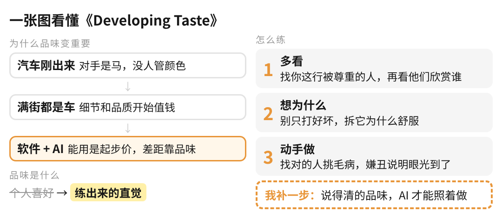
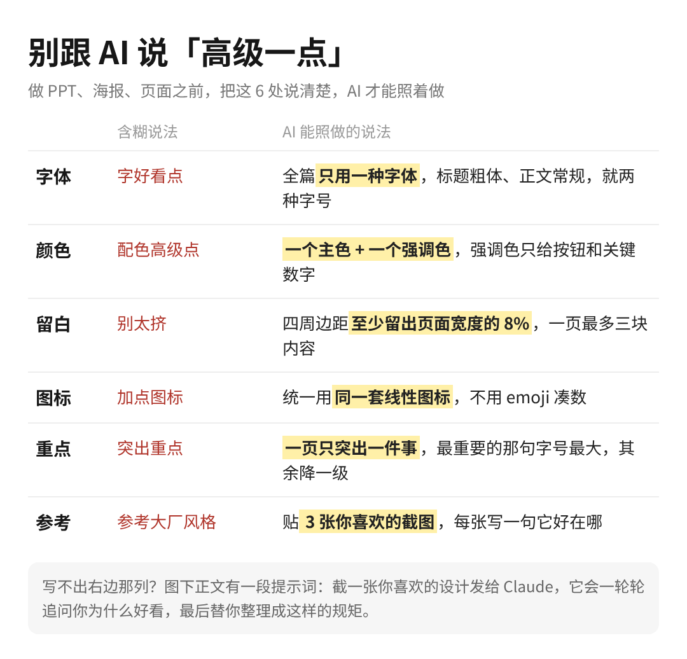

KRYPTO说AI · 原文精读
Developing Taste
品味的养成
作者：Emil Kowalski（设计工程师） · 原文：emilkowal.ski/ui/developing-taste
篇幅：约 600 词，读完约 4 分钟 · 精读整理：2026-10-12
一句话读懂AI 让「做出一个能用的软件」变得人人都会，能用不再是差异；拉开差距的是品牌、设计、直观和整体体验，也就是品味。品味不是天生的个人喜好，是可以练出来的直觉，练法三步：多看好作品，想清楚为什么喜欢，自己动手做。
这份精读包含
一、一张图看懂全文结构
二、逐段精读：原文 + 中文 + 精读注
三、关键词
四、原文引用的 5 份延伸阅读
五、可以争论的地方和我们的批注
六、落地工具：对照表、提示词、设计规范模板
一、一张图看懂

全文的骨架只有三层：为什么（能用的东西过剩了，所以品味值钱）→ 是什么（品味是练出来的直觉，不是个人偏好）→ 怎么练（看、想、做）。整篇没有数据和案例研究，靠类比和名人引语撑起论证，所以读的时候重点看它的定义和方法，不必找证据链。
二、逐段精读
1. 开篇：汽车和马
When the first car came out, consumers didn't care about its color, or silhouette, because the competition was a horse. But now that cars have been commoditized, quality and details have become more important than ever.
第一辆汽车问世时，消费者不关心它的颜色和外形，因为它的竞争对手是马。如今汽车已经同质化，品质和细节变得前所未有地重要。
精读注：这是全文的核心类比。关键词是 commoditized（同质化 / 商品化）：当一种东西人人都能提供，竞争就从「有没有」转到「好不好」。脚注 1 指向 Stripe 2024 年大会的分享《Craft and beauty: The business value of form in function》，说明这个观点在商业语境里也被讨论过，不只是设计师的审美主张。
2. 软件也一样：能用不再是差异
Simply shipping a product that works is no longer enough, everyone can do that, especially now with AI. It's not the differentiator anymore as people expect things to work. What makes a product stand out is the brand, design, how intuitive it is, the overall experience. Taste is what matters.
只交付一个能用的产品已经不够了，人人都能做到，有了 AI 更是如此。能用不再是差异化优势，因为用户默认它就该能用。让产品脱颖而出的是品牌、设计、直观易用和整体体验。品味才是关键。
精读注：注意他列的四样：品牌、设计、直观、整体体验。品味在这里不是「好看」一个维度，是一组决定。这也是 AI 时代的反常识：AI 降低的是「做出来」的门槛，没有降低「做对」的门槛，反而让后者更稀缺。
In a world of scarcity, we treasure tools. In a world of abundance, we treasure taste.
— Anu Atluru, Taste is Eating Silicon Valley
稀缺的世界里，人们珍视工具；富足的世界里，人们珍视品味。
精读注：标题化用了 Marc Andreessen 的名句「软件正在吞噬世界」。这句引语把汽车类比抽象成一条规律：供给稀缺时比工具，供给过剩时比品味。
3. 品味是什么
But what is good taste? It's commonly mistaken as personal preference, but it's more than that — it's a trained instinct. The ability to see beyond the obvious and recognize what elevates. It's why some designs feel effortless. So the real question is, how do you train that instinct?
什么是好品味？人们常把它误解为个人偏好，但它不止于此，它是一种训练出来的直觉：能看到显而易见之外的东西，认得出是什么让作品更好。这就是为什么有些设计让人感觉毫不费力。所以真正的问题是：怎么训练这种直觉？
精读注：全文最重要的一个定义：trained instinct（训练出来的直觉）。两个字都要读：「直觉」说明它最终是快速、不假思索的判断；「训练」说明它可以后天获得。这个定义把品味从「玄学」拉回到「技能」，后面三步练法都建立在这上面。
4. 练法一：让好作品包围你
If you are a designer, you should be looking at great designs. If you are a writer, you should be reading great books. Expose yourself to great work, this way you'll learn how greatness looks and feels like.
设计师应该多看伟大的设计，作家应该多读伟大的书。让自己接触杰出的作品，才能知道「伟大」看起来、感觉起来是什么样。
It comes down to trying to expose yourself to the best things that humans have done and then try to bring those things into what you're doing.
— Steve Jobs
归根结底，就是去接触人类做过的最好的东西，再把它们带进你正在做的事里。
Find people who are respected in their field. Look who they admire and build a curated list of tastemakers. Surround yourself with their work. Look at their designs, use their apps, read their books. Learning from the best is the best way to learn.
找到在各自领域受尊敬的人，看看他们欣赏谁，建一份「品味缔造者」名单。让他们的作品包围你：看他们的设计，用他们的应用，读他们的书。
精读注：这一步最实用的是 「看他们欣赏谁」：不是自己去刷灵感网站，而是借高手的眼光做筛选，名单一层层往外扩。这个方法来自 Julie Zhuo 的《On taste, part 3》（脚注 2）。
5. 练法二：想清楚你为什么喜欢
While calibrating your taste, don't label things as good or bad. Instead of relying on gut feelings, try to rationalize why something feels great. Analyze and understand patterns, don't rely purely on your intuition.
校准品味时，不要简单地给东西贴「好」或「坏」的标签。别只靠第一感觉，试着理性地分析为什么某样东西感觉很棒。分析并理解其中的模式，不要纯粹依赖直觉。
If you're a designer, don't just use apps, study them. Why does a specific interaction feel good? If you're a filmmaker, don't just watch movies, think about why the director made the choices they did. Have a mindset of thinking deeply about what makes something great. Go beyond the surface level. Be curious.
设计师别只用应用，要研究它们：某个交互为什么让人舒服？拍电影的别只看电影，要想导演为什么这么选。养成深入思考「是什么让东西变得出色」的习惯，超越表面，保持好奇。
精读注：这里有一个值得注意的张力：前面说品味是「直觉」，这里又说「别只靠直觉」。两者不矛盾：训练期要把直觉拆成说得清的理由，练熟以后理由才内化成直觉。脚注 3 推荐的 Brian Lovin《App Dissection》就是「拆别人 App 交互细节」的范例。在 AI 时代这一步分量更重，见第五部分的批注。
6. 练法三：动手做
Practice your craft. Create things. A designer should design, a writer should write. This will make you not only a good judge of taste, but also, with time, a tastemaker. While practicing, seek feedback from others. Good critique from the right person can accelerate this process more than trial and error alone.
练习你的手艺，去创造。设计师就设计，作家就写作。这不只让你成为品味的好评判者，时间久了还会成为品味的缔造者。练习时向别人要反馈，来自对的人的好批评，比单靠试错快得多。
The things you'll create probably won't be good at first, but that's a good sign. Your taste is good enough to tell that your work is not on par yet. This phase is normal. Don't quit, it'll get better overtime.
你做的东西一开始多半不好，但这是好迹象：说明你的品味已经够好，能看出自己的作品还没到位。这个阶段很正常，别放弃，会越来越好。
精读注：这段对应 Ira Glass 著名的 taste gap（品味差距）（脚注 4）：初学者的眼光往往先于手艺，所以会对自己的作品不满意。很多人在这个阶段放弃，作者的意思是：这份不满意恰恰证明方向对了。
三、关键词
| 原文 | 中文 | 在文中的意思 |
|---|
| commoditized | 同质化 / 商品化 | 一样东西人人都能提供，竞争从「有没有」转到「好不好」 |
| differentiator | 差异化优势 | 能用已经不是，品牌、设计、体验才是 |
| taste | 品味 | 对品牌、设计、直观、整体体验的一组判断 |
| trained instinct | 训练出来的直觉 | 全文对品味的定义：后天可练、练熟后快速判断 |
| calibrate | 校准 | 把直觉和「为什么」对齐的过程 |
| tastemaker | 品味缔造者 | 值得追随的高手；也是长期练习后的你 |
| taste gap | 品味差距 | 眼光先于手艺的阶段（Ira Glass） |
四、原文引用的延伸阅读
| 文献 | 为什么值得读 |
|---|
| Stripe Sessions 2024《Craft and beauty: The business value of form in function》 | 从商业角度讲「形式」的价值，补上原文缺的商业论证（脚注 1） |
| Anu Atluru《Taste is Eating Silicon Valley》 | 「稀缺比工具，富足比品味」那句话的出处，讲品味为什么在硅谷变得重要 |
| Julie Zhuo《On taste, part 3》 | 「建一份品味缔造者名单」方法的来源（脚注 2） |
| Brian Lovin《App Dissection》 | 逐个拆解 App 交互细节的范例，练法二的现成教材（脚注 3） |
| Ira Glass《The Taste Gap》 | 初学者为什么总嫌自己做得差、为什么要坚持（脚注 4） |
链接见原文脚注：emilkowal.ski/ui/developing-taste。中文译文参考 deusyu.app/posts/developing-taste。
五、可以争论的地方和我们的批注
1. 原文没展开的：品味怎么交给 AI
原文的三步练法是给人的。但现在很多东西是让 AI 做的，这里多了一步：说得清的品味，AI 才能照着做。我们最近用 AI 手搓了一个高尔夫训练 App，功能都能跑，但设计全是 Claude 默认那一套：黑底、荧光绿按钮、emoji 当图标。原因是一句设计要求都没给。反过来，用 Claude 做 slides 时先把设计师给的那套设计元素固定进去，再让它出稿。所以练法二「想清楚为什么喜欢」在 AI 时代分量更重：它决定了你能不能把品味写成 AI 能执行的规矩。
图：我们做的高尔夫训练 App 首页（应用名已打码）。
2. 「别靠直觉」站得住吗
有一种反对意见：AI 时代说得清的东西都会被 AI 学走，说不清的直觉才值钱。我们站原文这边：训练期必须把直觉拆成理由，否则既练不快，也没法交给 AI 或团队执行。直觉是练出来的结果，不是起点。
3. 品味会不会被 AI 拉平
另一种担心：大家用同一个模型、看同一批好作品，最后审美都一样。我们的判断是品味依然是护城河：模型给的是默认值，默认值恰恰是没品味的起点。谁能把自己的判断说清楚、写进规范，谁的东西就和默认值拉开差距。
4. 原文的局限
文章短，全靠类比和引语，没有数据或案例证明「品味带来商业回报」；练法也偏原则，没有给频率、量化标准。读的时候把它当方法框架，商业证据可以去看 Stripe 那场分享。
六、落地工具
1. 对照表：别跟 AI 说「高级一点」

2. 品味追问提示词
截一张你觉得好看的设计，连同下面这段一起发给 Claude：
我会发给你一张我觉得很好看的截图。先别夸它，连续追问我 5 轮：每一轮让我说出更具体的一处好在哪里，比如间距、字号、颜色、对齐、动效、文案。我说得含糊（「高级」「舒服」「有质感」）的时候，让我换成能看得见、量得出的说法。5 轮之后，把我说过的话整理成 3 到 5 条可以直接写进设计规范的规则，每条写成「做什么 + 具体数值或例子」。
3. 一页设计规范模板
设计规范：每次做页面、slides、海报前先读完再动手
字体：只用……一种字体，标题……号粗体，正文……号常规
颜色：主色……，强调色……，强调色只用在……
留白：四周边距……，一页最多……块内容
图标：统一用……风格，不用 emoji
重点：每页只突出……，其余降一级
参考：（贴 3 张你喜欢的截图，每张写一句好在哪）
不要：（把你自己嫌丑的那几样写在这里）
4. 一周练习安排
| 对应练法 | 每天 / 每周做什么 |
|---|
| 多看 | 找 3 个你这行被尊重的人，再看他们夸谁、转谁，把名单往外扩一层 |
| 想为什么 | 每天截一张让你舒服的设计，写一句具体好在哪，不许写「高级」「舒服」 |
| 交给 AI | 攒够 20 条，整理成上面那页设计规范，下次让 AI 出稿前先贴给它 |
| 动手做 | 每周做一个小东西（一页 PPT、一张图、一个小页面），找一个懂行的人挑毛病 |
整理：Krypto说AI · 原文版权归 Emil Kowalski 所有，英文引文用于学习交流。本精读由 AI 辅助整理。